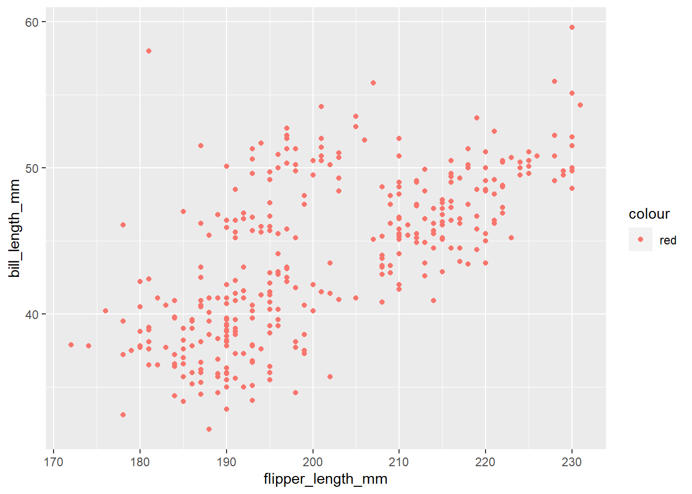
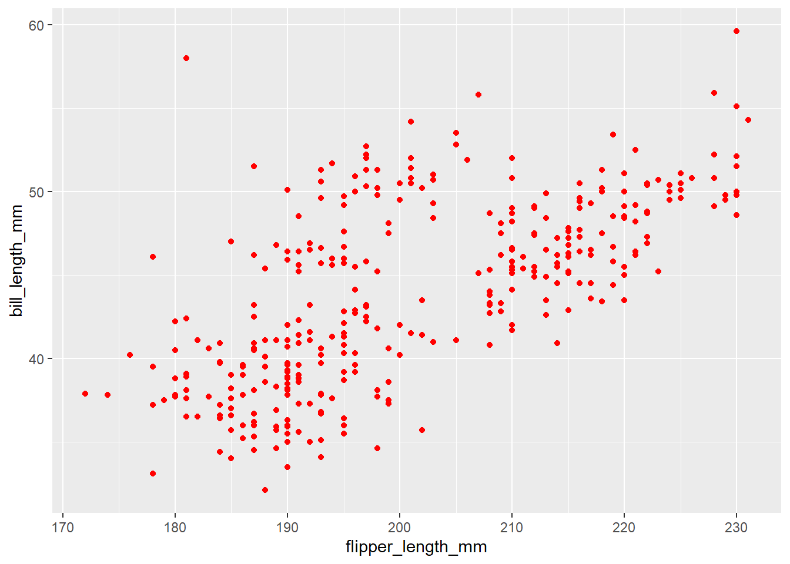
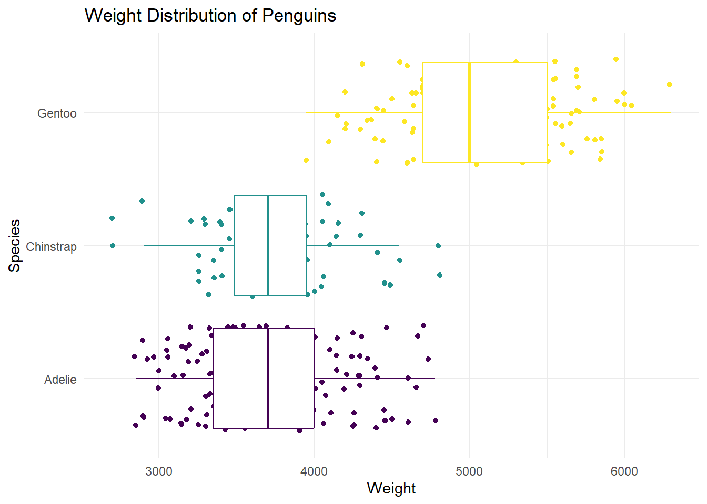

Data Viz + Data Manipulation
Suggested Answers
Go to the course GitHub organization and locate the repo titled ae-03-YOUR_GITHUB_USERNAME to get started.
This AE is due Friday, May 26th at 11:59pm.
Packages
Let’s remind ourselves what the following code chunk labels are doing above:
label: load-packages - name of your code chunk warning: false - hide warnings message: false - hide messages echo: false - Code will not show up in PDF eval: false - Code will not run when you make PDF
Data
These data were collected from 2007 - 2009 by Dr. Kristen Gorman with the Palmer Station Long Term Ecological Research Program, part of the US Long Term Ecological Research Network. The data were imported directly from the Environmental Data Initiative (EDI) Data Portal, and are available for use by CC0 license (“No Rights Reserved”) in accordance with the Palmer Station Data Policy.
Mapping Variables (Coding Warm Up)
Below, the researcher is trying to create a scatterplot between flipper length and bill length. They also want to color all the points red (for some reason).
Below, run the two sets of code. Why does the first set of code not run?
penguins |>
ggplot(
aes(x = flipper_length_mm, y = bill_length_mm , color = "red")
) +
geom_point()Warning: Removed 2 rows containing missing values (`geom_point()`).
penguins |>
ggplot(
aes(x = flipper_length_mm, y = bill_length_mm)
) +
geom_point(color = "red")Warning: Removed 2 rows containing missing values (`geom_point()`).
Add response
Plot Recreation
We can use multiple geoms on a single plot! Be deliberate about the order of plotting. Our task is to recreate the following image below. Hint: This plot uses theme_minimal and scale_color_viridis_d(option = "D").
Note: Themes are a powerful way to customize the non-data components of your plots: i.e. titles, labels, fonts, background, gridlines, and legends: theme(). This is different than theme_minimal. Hint: pull up the help file for theme() and search for legend.position.

Make your own code chunk below
Recreate the plot
Start your code chunk here. Make sure to give it an appropriate label:
penguins |>
ggplot(
aes(x = body_mass_g , y = species, color = species)
) +
labs(title = "Weight Distribution of Penguins",
x = "Weight",
y = "Species") +
geom_point(position = "jitter") +
geom_boxplot() +
scale_color_viridis_d(option = "D") +
theme_minimal() +
theme(legend.position = "none") Warning: Removed 2 rows containing non-finite values (`stat_boxplot()`).Warning: Removed 2 rows containing missing values (`geom_point()`).
Above, we made note to “be deliberate about the order of plotting.” Let’s show why. Switch the order of the geoms used above and re-run your code. What happened?
Add Response
Data Wrangling
To demonstrate data wrangling we will use flights, a tibble in the nycflights13 R package. It includes characteristics of all flights departing from New York City (JFK, LGA, EWR) in 2013.
Tibble vs. data frame
A tibble is an opinionated version of the R data frame. In other words, all tibbles are data frames, but not all data frames are tibbles!
There are many differences between a tibble and a data frame. The main one is…
- When you print a tibble, the first ten rows and all of the columns that fit on the screen will display, along with the type of each column.
Let’s look at the differences in the output when we type flights (tibble) in the console versus typing cars (data frame) in the console.
The pipe (a review)
Before working with more data wrangling functions, let’s formally introduce the pipe. The pipe, |>, is an operator (a tool) for passing information from one process to another. We will use |> mainly in data pipelines to pass the output of the previous line of code as the first input of the next line of code.
When reading code “in English”, say “and then” whenever you see a pipe.
Data wrangling with dplyr
dplyr is the primary package in the tidyverse for data wrangling. Click here for the dplyr reference page. Click here for the dplyr cheatsheet.
Quick summary of key dplyr functions1:
Rows:
-
filter():chooses rows based on column values. -
slice(): chooses rows based on location. -
arrange(): changes the order of the rows -
sample_n(): take a random subset of the rows
Columns:
-
select(): changes whether or not a column is included. -
rename(): changes the name of columns. -
mutate(): changes the values of columns and creates new columns.
Groups of rows:
-
summarise(): collapses a group into a single row. -
count(): count unique values of one or more variables. -
group_by(): perform calculations separately for each value of a variable
Activities
select()
- Demo: Make a data frame that only contains the variables
dep_delayandarr_delay.
flights |>
select(dep_delay, arr_delay)# A tibble: 336,776 × 2
dep_delay arr_delay
<dbl> <dbl>
1 2 11
2 4 20
3 2 33
4 -1 -18
5 -6 -25
6 -4 12
7 -5 19
8 -3 -14
9 -3 -8
10 -2 8
# … with 336,766 more rows- Demo: Make a data frame that keeps every variable except
dep_delay. Call the new data framenew.data
new.data <- flights |>
select(-dep_delay)In the console, type
1:10and hit enter. What happened?Demo: Make a data frame that includes all variables between
yearthroughdep_delay(inclusive). These are all variables that provide information about the departure of each flight.
flights |>
select(year:dep_delay)# A tibble: 336,776 × 6
year month day dep_time sched_dep_time dep_delay
<int> <int> <int> <int> <int> <dbl>
1 2013 1 1 517 515 2
2 2013 1 1 533 529 4
3 2013 1 1 542 540 2
4 2013 1 1 544 545 -1
5 2013 1 1 554 600 -6
6 2013 1 1 554 558 -4
7 2013 1 1 555 600 -5
8 2013 1 1 557 600 -3
9 2013 1 1 557 600 -3
10 2013 1 1 558 600 -2
# … with 336,766 more rows- Demo: Use the
selecthelpercontains()to make a data frame that includes the variables associated with the arrival, i.e., contains the string"arr_"in the name. Reminder: Thinking about code as sentences can help make nesting functions more intuitive.
Hint: Run ?contains and click Select variables that match a pattern. Scroll down to the examples. Next answer the question below.
flights |>
select(contains("arr_"))# A tibble: 336,776 × 3
arr_time sched_arr_time arr_delay
<int> <int> <dbl>
1 830 819 11
2 850 830 20
3 923 850 33
4 1004 1022 -18
5 812 837 -25
6 740 728 12
7 913 854 19
8 709 723 -14
9 838 846 -8
10 753 745 8
# … with 336,766 more rows- Review: Why is arr_in quotes?
Add response here
This is a good time to render and push to GitHub. Let’s go through this demonstration now. This is how you will turn in your AEs for the summer session
slice()
- Demo: Display the first five rows of the
flightsdata frame.
flights |>
slice(1:5)# A tibble: 5 × 19
year month day dep_time sched_dep…¹ dep_d…² arr_t…³ sched…⁴ arr_d…⁵ carrier
<int> <int> <int> <int> <int> <dbl> <int> <int> <dbl> <chr>
1 2013 1 1 517 515 2 830 819 11 UA
2 2013 1 1 533 529 4 850 830 20 UA
3 2013 1 1 542 540 2 923 850 33 AA
4 2013 1 1 544 545 -1 1004 1022 -18 B6
5 2013 1 1 554 600 -6 812 837 -25 DL
# … with 9 more variables: flight <int>, tailnum <chr>, origin <chr>,
# dest <chr>, air_time <dbl>, distance <dbl>, hour <dbl>, minute <dbl>,
# time_hour <dttm>, and abbreviated variable names ¹sched_dep_time,
# ²dep_delay, ³arr_time, ⁴sched_arr_time, ⁵arr_delay- Demo: Display the last two rows of the
flightsdata frame. Hint:n()produces the number of the last row in the data set.
flights |>
slice((n()-1):n())# A tibble: 2 × 19
year month day dep_time sched_dep…¹ dep_d…² arr_t…³ sched…⁴ arr_d…⁵ carrier
<int> <int> <int> <int> <int> <dbl> <int> <int> <dbl> <chr>
1 2013 9 30 NA 1159 NA NA 1344 NA MQ
2 2013 9 30 NA 840 NA NA 1020 NA MQ
# … with 9 more variables: flight <int>, tailnum <chr>, origin <chr>,
# dest <chr>, air_time <dbl>, distance <dbl>, hour <dbl>, minute <dbl>,
# time_hour <dttm>, and abbreviated variable names ¹sched_dep_time,
# ²dep_delay, ³arr_time, ⁴sched_arr_time, ⁵arr_delay# OR
flights |>
slice_tail(n = 2)# A tibble: 2 × 19
year month day dep_time sched_dep…¹ dep_d…² arr_t…³ sched…⁴ arr_d…⁵ carrier
<int> <int> <int> <int> <int> <dbl> <int> <int> <dbl> <chr>
1 2013 9 30 NA 1159 NA NA 1344 NA MQ
2 2013 9 30 NA 840 NA NA 1020 NA MQ
# … with 9 more variables: flight <int>, tailnum <chr>, origin <chr>,
# dest <chr>, air_time <dbl>, distance <dbl>, hour <dbl>, minute <dbl>,
# time_hour <dttm>, and abbreviated variable names ¹sched_dep_time,
# ²dep_delay, ³arr_time, ⁴sched_arr_time, ⁵arr_delayarrange()
- Demo: Let’s arrange the data by departure delay, so the flights with the shortest departure delays will be at the top of the data frame.
flights |>
arrange(dep_delay)# A tibble: 336,776 × 19
year month day dep_time sched_de…¹ dep_d…² arr_t…³ sched…⁴ arr_d…⁵ carrier
<int> <int> <int> <int> <int> <dbl> <int> <int> <dbl> <chr>
1 2013 12 7 2040 2123 -43 40 2352 48 B6
2 2013 2 3 2022 2055 -33 2240 2338 -58 DL
3 2013 11 10 1408 1440 -32 1549 1559 -10 EV
4 2013 1 11 1900 1930 -30 2233 2243 -10 DL
5 2013 1 29 1703 1730 -27 1947 1957 -10 F9
6 2013 8 9 729 755 -26 1002 955 7 MQ
7 2013 10 23 1907 1932 -25 2143 2143 0 EV
8 2013 3 30 2030 2055 -25 2213 2250 -37 MQ
9 2013 3 2 1431 1455 -24 1601 1631 -30 9E
10 2013 5 5 934 958 -24 1225 1309 -44 B6
# … with 336,766 more rows, 9 more variables: flight <int>, tailnum <chr>,
# origin <chr>, dest <chr>, air_time <dbl>, distance <dbl>, hour <dbl>,
# minute <dbl>, time_hour <dttm>, and abbreviated variable names
# ¹sched_dep_time, ²dep_delay, ³arr_time, ⁴sched_arr_time, ⁵arr_delay- Demo: Now let’s arrange the data by descending departure delay, so the flights with the longest departure delays will be at the top. Hint, run
?descin the console.
flights |>
arrange(desc(dep_delay))# A tibble: 336,776 × 19
year month day dep_time sched_de…¹ dep_d…² arr_t…³ sched…⁴ arr_d…⁵ carrier
<int> <int> <int> <int> <int> <dbl> <int> <int> <dbl> <chr>
1 2013 1 9 641 900 1301 1242 1530 1272 HA
2 2013 6 15 1432 1935 1137 1607 2120 1127 MQ
3 2013 1 10 1121 1635 1126 1239 1810 1109 MQ
4 2013 9 20 1139 1845 1014 1457 2210 1007 AA
5 2013 7 22 845 1600 1005 1044 1815 989 MQ
6 2013 4 10 1100 1900 960 1342 2211 931 DL
7 2013 3 17 2321 810 911 135 1020 915 DL
8 2013 6 27 959 1900 899 1236 2226 850 DL
9 2013 7 22 2257 759 898 121 1026 895 DL
10 2013 12 5 756 1700 896 1058 2020 878 AA
# … with 336,766 more rows, 9 more variables: flight <int>, tailnum <chr>,
# origin <chr>, dest <chr>, air_time <dbl>, distance <dbl>, hour <dbl>,
# minute <dbl>, time_hour <dttm>, and abbreviated variable names
# ¹sched_dep_time, ²dep_delay, ³arr_time, ⁴sched_arr_time, ⁵arr_delay-
Your turn (5 minutes): Create a data frame that only includes the plane tail number (
tailnum), carrier (carrier), and departure delay for the flight with the longest departure delay. What is the plane tail number (tailnum) for this flight?
flights |>
select(tailnum, carrier, dep_delay) |>
arrange(desc(dep_delay)) |>
slice(1) |>
select(tailnum)# A tibble: 1 × 1
tailnum
<chr>
1 N384HA Footnotes
From dplyr vignette↩︎